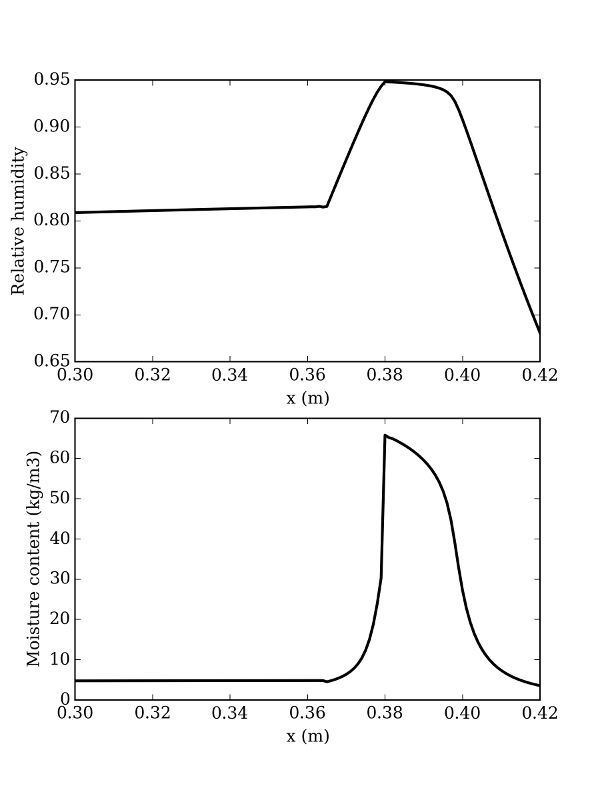

Hamstad BM5
This script simulates the fifth exercise of the Hamstad benchmark package: multi-layered wall with capillary active inside insulation
Since hamopy is not really speed-optimised, this may take a few minutes to compute.
Script
"""
5th exercise of the Hamstad benchmark package
Capillary active inside insulation
"""
from hamopy.classes import Mesh, Boundary, Time
# Choice of materials and geometry
from hamopy.materials.hamstad import BM5_brick, BM5_mortar, BM5_insulation
mesh = Mesh(**{"materials" : [BM5_brick, BM5_mortar, BM5_insulation],
"sizes" : [0.365, 0.015, 0.040],
"nbr_elements" : [100, 20, 20] })
# Boundary conditions
clim1 = Boundary('Fourier',**{"T" : 273.15,
"HR" : 0.8,
"h_t" : 25.,
"h_m" : 1.8382e-7 })
clim2 = Boundary('Fourier',**{"T" : 293.15,
"HR" : 0.6,
"h_t" : 8.,
"h_m" : 5.8823e-8 })
clim = [clim1, clim2]
# Initial conditions
init = {'T' : 298.15,
'HR' : 0.6}
# Time step size
time = Time('variable',**{"delta_t" : 900,
"t_max" : 12960000,
"iter_max" : 12,
"delta_min": 1e-3,
"delta_max": 900 } )
if __name__ == "__main__":
import numpy as np
# Calculation
from hamopy.algorithm import calcul
result = calcul(mesh, clim, init, time)
# Post processing
from hamopy.postpro import distribution
t_plot = 12960000
x_plot = np.linspace(0, 0.42, 421)
from hamopy import ham_library as ham
Temperature = distribution(result, 'T', x_plot, t_plot)
Humidity = distribution(result, 'HR', x_plot, t_plot)
Moisture = np.zeros(np.shape(Temperature))
# Moisture content distribution of each layer
for i in range(len(mesh.materials)):
xmin = sum(mesh.sizes[0:i])
xmax = sum(mesh.sizes[0:i+1])
mask = ((x_plot >= xmin) & (x_plot <= xmax))
Moisture[mask] = mesh.materials[i].w(ham.p_c(Humidity[mask],Temperature[mask]), Temperature[mask])
# Plotting results
import matplotlib.pylab as plt
from matplotlib import rc
rc("font", family="serif", size=12)
figsize(6, 8)
ax = plt.subplot(211)
plt.plot(x_plot[300:], Humidity[300:], 'k-', linewidth=2)
plt.xlabel('x (m)')
plt.ylabel('Relative humidity')
ax = plt.subplot(212)
plt.plot(x_plot[300:], Moisture[300:], 'k-', linewidth=2)
plt.xlabel('x (m)')
plt.ylabel('Moisture content (kg/m3)')
fig = plt.gcf()
fig.savefig('BM5_results.png', format='png', dpi = 300)
Results
